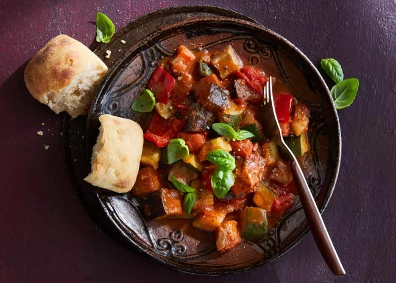

Ratatouille Provençale

Description
In France, we make this ratatouille recipe all year long to serve as a main dish with white rice or as a side
with fish or meat. It is naturally vegan and tastes especially good when made with sun-ripened vegetables.
Ingredients
- ½ cup extra-virgin olive oil
- 2 large onions, quartered
- 3 cloves garlic, minced
- 2 pounds fresh tomatoes, quartered
- 3 eggplants, sliced into 1/2-inch rounds
- 6 zucchini, cut into 1/2-inch slices
- ½ cup tomato puree (Optional)
- 3 tablespoons herbes de Provence
- salt and ground black pepper to taste
Steps
- Pour olive oil into a large pot over high heat. Add onions and garlic and sauté for 2 minutes. Reduce heat
and add tomatoes, eggplants, zucchini, tomato purée, and herbes de Provence; season with salt and pepper.
Cover and simmer for 30 minutes.
- Uncover and check the level of liquid in the pot. Continue cooking for 30 minutes, uncovered if there is too
much liquid or covered if the amount of liquid looks right.